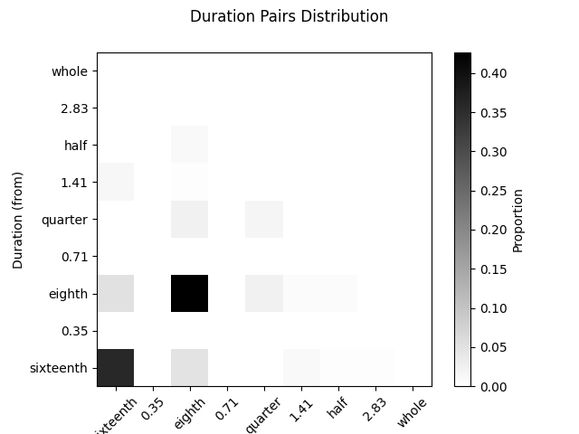

Note
Go to the end to download the full example code.
Duration distributions (II)#
This example demonstrates how to calculate and visualize the duration distribution of notes in a MIDI file.
/opt/hostedtoolcache/Python/3.10.17/x64/lib/python3.10/site-packages/partitura/io/importmidi.py:575: UserWarning: pitch spelling
warnings.warn("pitch spelling")
/opt/hostedtoolcache/Python/3.10.17/x64/lib/python3.10/site-packages/partitura/io/importmidi.py:658: UserWarning: create_part
part = create_part(
/opt/hostedtoolcache/Python/3.10.17/x64/lib/python3.10/site-packages/partitura/io/importmidi.py:658: UserWarning: add notes
part = create_part(
/opt/hostedtoolcache/Python/3.10.17/x64/lib/python3.10/site-packages/partitura/io/importmidi.py:658: UserWarning: add time sigs and measures
part = create_part(
/opt/hostedtoolcache/Python/3.10.17/x64/lib/python3.10/site-packages/partitura/io/importmidi.py:658: UserWarning: tie notes
part = create_part(
/opt/hostedtoolcache/Python/3.10.17/x64/lib/python3.10/site-packages/partitura/io/importmidi.py:658: UserWarning: find tuplets
part = create_part(
/opt/hostedtoolcache/Python/3.10.17/x64/lib/python3.10/site-packages/partitura/io/importmidi.py:658: UserWarning: done create_part
part = create_part(
partitura_convert_part: after pass 1, measures are
[(1, 0, 1440), ('timesig', 3, 4), ('keysig', 0), (2, 1440, 2880), (3, 2880, 4320), (4, 4320, 5760), (5, 5760, 7200), (6, 7200, 8640), (7, 8640, 10080), (8, 10080, 11520), (9, 11520, 12960), (10, 12960, 14400), (11, 14400, 15840), (12, 15840, 17280), (13, 17280, 18720), (14, 18720, 20160), (15, 20160, 21600), (16, 21600, 23040), (17, 23040, 24480), (18, 24480, 25920), (19, 25920, 27360), (20, 27360, 28800), (21, 28800, 30240), (22, 30240, 31680), (23, 31680, 33120), (24, 33120, 34560), (25, 34560, 36000), (26, 36000, 37440), (27, 37440, 38880), (28, 38880, 40320), (29, 40320, 41760), (30, 41760, 43200), (31, 43200, 44640), (32, 44640, 46080), (33, 46080, 47520), (34, 47520, 48960), (35, 48960, 50400), (36, 50400, 51840), (37, 51840, 53280), (38, 53280, 54720), (39, 54720, 56160), (40, 56160, 57600), (41, 57600, 59040), (42, 59040, 60480), (43, 60480, 61920), (44, 61920, 63360), (45, 63360, 64800), (46, 64800, 66240)]
div_to_quarter: div 1440 qtrs 3.0
div_to_quarter: div 0 qtrs 0.0
div_to_quarter: div 2880 qtrs 6.0
div_to_quarter: div 1440 qtrs 3.0
div_to_quarter: div 4320 qtrs 9.0
div_to_quarter: div 2880 qtrs 6.0
div_to_quarter: div 5760 qtrs 12.0
div_to_quarter: div 4320 qtrs 9.0
div_to_quarter: div 7200 qtrs 15.0
div_to_quarter: div 5760 qtrs 12.0
div_to_quarter: div 8640 qtrs 18.0
div_to_quarter: div 7200 qtrs 15.0
div_to_quarter: div 10080 qtrs 21.0
div_to_quarter: div 8640 qtrs 18.0
div_to_quarter: div 11520 qtrs 24.0
div_to_quarter: div 10080 qtrs 21.0
div_to_quarter: div 12960 qtrs 27.0
div_to_quarter: div 11520 qtrs 24.0
div_to_quarter: div 14400 qtrs 30.0
div_to_quarter: div 12960 qtrs 27.0
div_to_quarter: div 15840 qtrs 33.0
div_to_quarter: div 14400 qtrs 30.0
div_to_quarter: div 17280 qtrs 36.0
div_to_quarter: div 15840 qtrs 33.0
div_to_quarter: div 18720 qtrs 39.0
div_to_quarter: div 17280 qtrs 36.0
div_to_quarter: div 20160 qtrs 42.0
div_to_quarter: div 18720 qtrs 39.0
div_to_quarter: div 21600 qtrs 45.0
div_to_quarter: div 20160 qtrs 42.0
div_to_quarter: div 23040 qtrs 48.0
div_to_quarter: div 21600 qtrs 45.0
div_to_quarter: div 24480 qtrs 51.0
div_to_quarter: div 23040 qtrs 48.0
div_to_quarter: div 25920 qtrs 54.0
div_to_quarter: div 24480 qtrs 51.0
div_to_quarter: div 27360 qtrs 57.0
div_to_quarter: div 25920 qtrs 54.0
div_to_quarter: div 28800 qtrs 60.0
div_to_quarter: div 27360 qtrs 57.0
div_to_quarter: div 30240 qtrs 63.0
div_to_quarter: div 28800 qtrs 60.0
div_to_quarter: div 31680 qtrs 66.0
div_to_quarter: div 30240 qtrs 63.0
div_to_quarter: div 33120 qtrs 69.0
div_to_quarter: div 31680 qtrs 66.0
div_to_quarter: div 34560 qtrs 72.0
div_to_quarter: div 33120 qtrs 69.0
div_to_quarter: div 36000 qtrs 75.0
div_to_quarter: div 34560 qtrs 72.0
div_to_quarter: div 37440 qtrs 78.0
div_to_quarter: div 36000 qtrs 75.0
div_to_quarter: div 38880 qtrs 81.0
div_to_quarter: div 37440 qtrs 78.0
div_to_quarter: div 40320 qtrs 84.0
div_to_quarter: div 38880 qtrs 81.0
div_to_quarter: div 41760 qtrs 87.0
div_to_quarter: div 40320 qtrs 84.0
div_to_quarter: div 43200 qtrs 90.0
div_to_quarter: div 41760 qtrs 87.0
div_to_quarter: div 44640 qtrs 93.0
div_to_quarter: div 43200 qtrs 90.0
div_to_quarter: div 46080 qtrs 96.0
div_to_quarter: div 44640 qtrs 93.0
div_to_quarter: div 47520 qtrs 99.0
div_to_quarter: div 46080 qtrs 96.0
div_to_quarter: div 48960 qtrs 102.0
div_to_quarter: div 47520 qtrs 99.0
div_to_quarter: div 50400 qtrs 105.0
div_to_quarter: div 48960 qtrs 102.0
div_to_quarter: div 51840 qtrs 108.0
div_to_quarter: div 50400 qtrs 105.0
div_to_quarter: div 53280 qtrs 111.0
div_to_quarter: div 51840 qtrs 108.0
div_to_quarter: div 54720 qtrs 114.0
div_to_quarter: div 53280 qtrs 111.0
div_to_quarter: div 56160 qtrs 117.0
div_to_quarter: div 54720 qtrs 114.0
div_to_quarter: div 57600 qtrs 120.0
div_to_quarter: div 56160 qtrs 117.0
div_to_quarter: div 59040 qtrs 123.0
div_to_quarter: div 57600 qtrs 120.0
div_to_quarter: div 60480 qtrs 126.0
div_to_quarter: div 59040 qtrs 123.0
div_to_quarter: div 61920 qtrs 129.0
div_to_quarter: div 60480 qtrs 126.0
div_to_quarter: div 63360 qtrs 132.0
div_to_quarter: div 61920 qtrs 129.0
div_to_quarter: div 64800 qtrs 135.0
div_to_quarter: div 63360 qtrs 132.0
div_to_quarter: div 66240 qtrs 138.0
div_to_quarter: div 64800 qtrs 135.0
div_to_quarter: div 0 qtrs 0.0
ignoring 0-- Clef sign=G line=2 number=1
ignoring 0--1440 Measure number=1 name=1
ignoring 0-- TimeSignature 3/4
div_to_quarter: div 0 qtrs 0.0
Tempo start 0.0 tempo 1.1666664722222546
append_beat_tempo 1.1666664722222546 <amads.core.time_map.MapBeat object at 0x7fc3ea74da80>
ignoring 0-- KeySignature fifths=0, mode=major (C)
div_to_quarter: div 240 qtrs 0.5
div_to_quarter: div 480 qtrs 1.0
div_to_quarter: div 720 qtrs 1.5
div_to_quarter: div 960 qtrs 2.0
div_to_quarter: div 1200 qtrs 2.5
div_to_quarter: div 1440 qtrs 3.0
ignoring 1440--2880 Measure number=2 name=2
div_to_quarter: div 2400 qtrs 5.0
div_to_quarter: div 2640 qtrs 5.5
div_to_quarter: div 2880 qtrs 6.0
ignoring 2880--4320 Measure number=3 name=3
div_to_quarter: div 3120 qtrs 6.5
div_to_quarter: div 3360 qtrs 7.0
div_to_quarter: div 3600 qtrs 7.5
div_to_quarter: div 3840 qtrs 8.0
div_to_quarter: div 4080 qtrs 8.5
div_to_quarter: div 4320 qtrs 9.0
ignoring 4320--5760 Measure number=4 name=4
div_to_quarter: div 4560 qtrs 9.5
div_to_quarter: div 4800 qtrs 10.0
div_to_quarter: div 5040 qtrs 10.5
div_to_quarter: div 5280 qtrs 11.0
div_to_quarter: div 5760 qtrs 12.0
ignoring 5760--7200 Measure number=5 name=5
div_to_quarter: div 6000 qtrs 12.5
div_to_quarter: div 6240 qtrs 13.0
div_to_quarter: div 6480 qtrs 13.5
div_to_quarter: div 6720 qtrs 14.0
div_to_quarter: div 6960 qtrs 14.5
div_to_quarter: div 7200 qtrs 15.0
ignoring 7200--8640 Measure number=6 name=6
div_to_quarter: div 7680 qtrs 16.0
div_to_quarter: div 8160 qtrs 17.0
div_to_quarter: div 8640 qtrs 18.0
ignoring 8640--10080 Measure number=7 name=7
div_to_quarter: div 8880 qtrs 18.5
div_to_quarter: div 9120 qtrs 19.0
div_to_quarter: div 9360 qtrs 19.5
div_to_quarter: div 9600 qtrs 20.0
div_to_quarter: div 9840 qtrs 20.5
div_to_quarter: div 10080 qtrs 21.0
ignoring 10080--11520 Measure number=8 name=8
div_to_quarter: div 10560 qtrs 22.0
div_to_quarter: div 11040 qtrs 23.0
div_to_quarter: div 11280 qtrs 23.5
div_to_quarter: div 11520 qtrs 24.0
ignoring 11520--12960 Measure number=9 name=9
div_to_quarter: div 11760 qtrs 24.5
div_to_quarter: div 12000 qtrs 25.0
div_to_quarter: div 12240 qtrs 25.5
div_to_quarter: div 12480 qtrs 26.0
div_to_quarter: div 12720 qtrs 26.5
div_to_quarter: div 12960 qtrs 27.0
ignoring 12960--14400 Measure number=10 name=10
div_to_quarter: div 13680 qtrs 28.5
div_to_quarter: div 13800 qtrs 28.75
div_to_quarter: div 13920 qtrs 29.0
div_to_quarter: div 14040 qtrs 29.25
div_to_quarter: div 14160 qtrs 29.5
div_to_quarter: div 14280 qtrs 29.75
div_to_quarter: div 14400 qtrs 30.0
ignoring 14400--15840 Measure number=11 name=11
div_to_quarter: div 14520 qtrs 30.25
div_to_quarter: div 14640 qtrs 30.5
div_to_quarter: div 14760 qtrs 30.75
div_to_quarter: div 14880 qtrs 31.0
div_to_quarter: div 15000 qtrs 31.25
div_to_quarter: div 15120 qtrs 31.5
div_to_quarter: div 15240 qtrs 31.75
div_to_quarter: div 15360 qtrs 32.0
div_to_quarter: div 15480 qtrs 32.25
div_to_quarter: div 15600 qtrs 32.5
div_to_quarter: div 15720 qtrs 32.75
div_to_quarter: div 15840 qtrs 33.0
ignoring 15840--17280 Measure number=12 name=12
div_to_quarter: div 16560 qtrs 34.5
div_to_quarter: div 16680 qtrs 34.75
div_to_quarter: div 16800 qtrs 35.0
div_to_quarter: div 16920 qtrs 35.25
div_to_quarter: div 17040 qtrs 35.5
div_to_quarter: div 17160 qtrs 35.75
div_to_quarter: div 17280 qtrs 36.0
ignoring 17280--18720 Measure number=13 name=13
div_to_quarter: div 17400 qtrs 36.25
div_to_quarter: div 17520 qtrs 36.5
div_to_quarter: div 17640 qtrs 36.75
div_to_quarter: div 17760 qtrs 37.0
div_to_quarter: div 17880 qtrs 37.25
div_to_quarter: div 18000 qtrs 37.5
div_to_quarter: div 18120 qtrs 37.75
div_to_quarter: div 18240 qtrs 38.0
div_to_quarter: div 18360 qtrs 38.25
div_to_quarter: div 18480 qtrs 38.5
div_to_quarter: div 18600 qtrs 38.75
div_to_quarter: div 18720 qtrs 39.0
ignoring 18720--20160 Measure number=14 name=14
div_to_quarter: div 18960 qtrs 39.5
div_to_quarter: div 19080 qtrs 39.75
div_to_quarter: div 19200 qtrs 40.0
div_to_quarter: div 19320 qtrs 40.25
div_to_quarter: div 19440 qtrs 40.5
div_to_quarter: div 19560 qtrs 40.75
div_to_quarter: div 19680 qtrs 41.0
div_to_quarter: div 19800 qtrs 41.25
div_to_quarter: div 19920 qtrs 41.5
div_to_quarter: div 20040 qtrs 41.75
div_to_quarter: div 20160 qtrs 42.0
ignoring 20160--21600 Measure number=15 name=15
div_to_quarter: div 20400 qtrs 42.5
div_to_quarter: div 20520 qtrs 42.75
div_to_quarter: div 20640 qtrs 43.0
div_to_quarter: div 20880 qtrs 43.5
div_to_quarter: div 21120 qtrs 44.0
div_to_quarter: div 21360 qtrs 44.5
div_to_quarter: div 21480 qtrs 44.75
div_to_quarter: div 21600 qtrs 45.0
ignoring 21600--23040 Measure number=16 name=16
div_to_quarter: div 23040 qtrs 48.0
ignoring 23040--24480 Measure number=17 name=17
div_to_quarter: div 23280 qtrs 48.5
div_to_quarter: div 23520 qtrs 49.0
div_to_quarter: div 23760 qtrs 49.5
div_to_quarter: div 24000 qtrs 50.0
div_to_quarter: div 24240 qtrs 50.5
div_to_quarter: div 24480 qtrs 51.0
ignoring 24480--25920 Measure number=18 name=18
div_to_quarter: div 25440 qtrs 53.0
div_to_quarter: div 25680 qtrs 53.5
div_to_quarter: div 25920 qtrs 54.0
ignoring 25920--27360 Measure number=19 name=19
div_to_quarter: div 26160 qtrs 54.5
div_to_quarter: div 26400 qtrs 55.0
div_to_quarter: div 26640 qtrs 55.5
div_to_quarter: div 26880 qtrs 56.0
div_to_quarter: div 27120 qtrs 56.5
div_to_quarter: div 27360 qtrs 57.0
ignoring 27360--28800 Measure number=20 name=20
div_to_quarter: div 27840 qtrs 58.0
div_to_quarter: div 28080 qtrs 58.5
div_to_quarter: div 28320 qtrs 59.0
div_to_quarter: div 28800 qtrs 60.0
ignoring 28800--30240 Measure number=21 name=21
div_to_quarter: div 29040 qtrs 60.5
div_to_quarter: div 29160 qtrs 60.75
div_to_quarter: div 29280 qtrs 61.0
div_to_quarter: div 29520 qtrs 61.5
div_to_quarter: div 29760 qtrs 62.0
div_to_quarter: div 30000 qtrs 62.5
div_to_quarter: div 30240 qtrs 63.0
ignoring 30240--31680 Measure number=22 name=22
div_to_quarter: div 30480 qtrs 63.5
div_to_quarter: div 30600 qtrs 63.75
div_to_quarter: div 30720 qtrs 64.0
div_to_quarter: div 30960 qtrs 64.5
div_to_quarter: div 31200 qtrs 65.0
div_to_quarter: div 31440 qtrs 65.5
div_to_quarter: div 31680 qtrs 66.0
ignoring 31680--33120 Measure number=23 name=23
div_to_quarter: div 31800 qtrs 66.25
div_to_quarter: div 31920 qtrs 66.5
div_to_quarter: div 32040 qtrs 66.75
div_to_quarter: div 32160 qtrs 67.0
div_to_quarter: div 32400 qtrs 67.5
div_to_quarter: div 32640 qtrs 68.0
div_to_quarter: div 32880 qtrs 68.5
div_to_quarter: div 33120 qtrs 69.0
ignoring 33120--34560 Measure number=24 name=24
div_to_quarter: div 33360 qtrs 69.5
div_to_quarter: div 33480 qtrs 69.75
div_to_quarter: div 33600 qtrs 70.0
div_to_quarter: div 33840 qtrs 70.5
div_to_quarter: div 33960 qtrs 70.75
div_to_quarter: div 34080 qtrs 71.0
div_to_quarter: div 34320 qtrs 71.5
div_to_quarter: div 34440 qtrs 71.75
div_to_quarter: div 34560 qtrs 72.0
ignoring 34560--36000 Measure number=25 name=25
div_to_quarter: div 34800 qtrs 72.5
div_to_quarter: div 34920 qtrs 72.75
div_to_quarter: div 35040 qtrs 73.0
div_to_quarter: div 35280 qtrs 73.5
div_to_quarter: div 35520 qtrs 74.0
div_to_quarter: div 35640 qtrs 74.25
div_to_quarter: div 35760 qtrs 74.5
div_to_quarter: div 35880 qtrs 74.75
div_to_quarter: div 36000 qtrs 75.0
ignoring 36000--37440 Measure number=26 name=26
div_to_quarter: div 36240 qtrs 75.5
div_to_quarter: div 36480 qtrs 76.0
div_to_quarter: div 36720 qtrs 76.5
div_to_quarter: div 36960 qtrs 77.0
div_to_quarter: div 37200 qtrs 77.5
div_to_quarter: div 37440 qtrs 78.0
ignoring 37440--38880 Measure number=27 name=27
div_to_quarter: div 37680 qtrs 78.5
div_to_quarter: div 37920 qtrs 79.0
div_to_quarter: div 38160 qtrs 79.5
div_to_quarter: div 38400 qtrs 80.0
div_to_quarter: div 38640 qtrs 80.5
div_to_quarter: div 38880 qtrs 81.0
ignoring 38880--40320 Measure number=28 name=28
div_to_quarter: div 39120 qtrs 81.5
div_to_quarter: div 39360 qtrs 82.0
div_to_quarter: div 39600 qtrs 82.5
div_to_quarter: div 39840 qtrs 83.0
div_to_quarter: div 40080 qtrs 83.5
div_to_quarter: div 40320 qtrs 84.0
ignoring 40320--41760 Measure number=29 name=29
div_to_quarter: div 40560 qtrs 84.5
div_to_quarter: div 40800 qtrs 85.0
div_to_quarter: div 41040 qtrs 85.5
div_to_quarter: div 41280 qtrs 86.0
div_to_quarter: div 41520 qtrs 86.5
div_to_quarter: div 41760 qtrs 87.0
ignoring 41760--43200 Measure number=30 name=30
div_to_quarter: div 42000 qtrs 87.5
div_to_quarter: div 42240 qtrs 88.0
div_to_quarter: div 42480 qtrs 88.5
div_to_quarter: div 42720 qtrs 89.0
div_to_quarter: div 42960 qtrs 89.5
div_to_quarter: div 43200 qtrs 90.0
ignoring 43200--44640 Measure number=31 name=31
div_to_quarter: div 43440 qtrs 90.5
div_to_quarter: div 43680 qtrs 91.0
div_to_quarter: div 43920 qtrs 91.5
div_to_quarter: div 44160 qtrs 92.0
div_to_quarter: div 44400 qtrs 92.5
div_to_quarter: div 44640 qtrs 93.0
ignoring 44640--46080 Measure number=32 name=32
div_to_quarter: div 44880 qtrs 93.5
div_to_quarter: div 45120 qtrs 94.0
div_to_quarter: div 45360 qtrs 94.5
div_to_quarter: div 45600 qtrs 95.0
div_to_quarter: div 45840 qtrs 95.5
div_to_quarter: div 46080 qtrs 96.0
ignoring 46080--47520 Measure number=33 name=33
div_to_quarter: div 46320 qtrs 96.5
div_to_quarter: div 46440 qtrs 96.75
div_to_quarter: div 46560 qtrs 97.0
div_to_quarter: div 46800 qtrs 97.5
div_to_quarter: div 47040 qtrs 98.0
div_to_quarter: div 47280 qtrs 98.5
div_to_quarter: div 47400 qtrs 98.75
div_to_quarter: div 47520 qtrs 99.0
ignoring 47520--48960 Measure number=34 name=34
div_to_quarter: div 48240 qtrs 100.5
div_to_quarter: div 48480 qtrs 101.0
div_to_quarter: div 48960 qtrs 102.0
ignoring 48960--50400 Measure number=35 name=35
div_to_quarter: div 49200 qtrs 102.5
div_to_quarter: div 49440 qtrs 103.0
div_to_quarter: div 49680 qtrs 103.5
div_to_quarter: div 49920 qtrs 104.0
div_to_quarter: div 50160 qtrs 104.5
div_to_quarter: div 50400 qtrs 105.0
ignoring 50400--51840 Measure number=36 name=36
div_to_quarter: div 50880 qtrs 106.0
div_to_quarter: div 51360 qtrs 107.0
div_to_quarter: div 51840 qtrs 108.0
ignoring 51840--53280 Measure number=37 name=37
div_to_quarter: div 52080 qtrs 108.5
div_to_quarter: div 52320 qtrs 109.0
div_to_quarter: div 52560 qtrs 109.5
div_to_quarter: div 52800 qtrs 110.0
div_to_quarter: div 53040 qtrs 110.5
div_to_quarter: div 53280 qtrs 111.0
ignoring 53280--54720 Measure number=38 name=38
div_to_quarter: div 53520 qtrs 111.5
div_to_quarter: div 53760 qtrs 112.0
div_to_quarter: div 54000 qtrs 112.5
div_to_quarter: div 54240 qtrs 113.0
div_to_quarter: div 54480 qtrs 113.5
div_to_quarter: div 54720 qtrs 114.0
ignoring 54720--56160 Measure number=39 name=39
div_to_quarter: div 54960 qtrs 114.5
div_to_quarter: div 55200 qtrs 115.0
div_to_quarter: div 55440 qtrs 115.5
div_to_quarter: div 55680 qtrs 116.0
div_to_quarter: div 55920 qtrs 116.5
div_to_quarter: div 56160 qtrs 117.0
ignoring 56160--57600 Measure number=40 name=40
div_to_quarter: div 56880 qtrs 118.5
div_to_quarter: div 57000 qtrs 118.75
div_to_quarter: div 57120 qtrs 119.0
div_to_quarter: div 57240 qtrs 119.25
div_to_quarter: div 57360 qtrs 119.5
div_to_quarter: div 57480 qtrs 119.75
div_to_quarter: div 57600 qtrs 120.0
ignoring 57600--59040 Measure number=41 name=41
div_to_quarter: div 57720 qtrs 120.25
div_to_quarter: div 57840 qtrs 120.5
div_to_quarter: div 57960 qtrs 120.75
div_to_quarter: div 58080 qtrs 121.0
div_to_quarter: div 58200 qtrs 121.25
div_to_quarter: div 58320 qtrs 121.5
div_to_quarter: div 58440 qtrs 121.75
div_to_quarter: div 58560 qtrs 122.0
div_to_quarter: div 58680 qtrs 122.25
div_to_quarter: div 58800 qtrs 122.5
div_to_quarter: div 58920 qtrs 122.75
div_to_quarter: div 59040 qtrs 123.0
ignoring 59040--60480 Measure number=42 name=42
div_to_quarter: div 59760 qtrs 124.5
div_to_quarter: div 59880 qtrs 124.75
div_to_quarter: div 60000 qtrs 125.0
div_to_quarter: div 60120 qtrs 125.25
div_to_quarter: div 60240 qtrs 125.5
div_to_quarter: div 60360 qtrs 125.75
div_to_quarter: div 60480 qtrs 126.0
ignoring 60480--61920 Measure number=43 name=43
div_to_quarter: div 60600 qtrs 126.25
div_to_quarter: div 60720 qtrs 126.5
div_to_quarter: div 60840 qtrs 126.75
div_to_quarter: div 60960 qtrs 127.0
div_to_quarter: div 61080 qtrs 127.25
div_to_quarter: div 61200 qtrs 127.5
div_to_quarter: div 61320 qtrs 127.75
div_to_quarter: div 61440 qtrs 128.0
div_to_quarter: div 61560 qtrs 128.25
div_to_quarter: div 61680 qtrs 128.5
div_to_quarter: div 61800 qtrs 128.75
div_to_quarter: div 61920 qtrs 129.0
ignoring 61920--63360 Measure number=44 name=44
div_to_quarter: div 62160 qtrs 129.5
div_to_quarter: div 62280 qtrs 129.75
div_to_quarter: div 62400 qtrs 130.0
div_to_quarter: div 62520 qtrs 130.25
div_to_quarter: div 62640 qtrs 130.5
div_to_quarter: div 62760 qtrs 130.75
div_to_quarter: div 62880 qtrs 131.0
div_to_quarter: div 63000 qtrs 131.25
div_to_quarter: div 63120 qtrs 131.5
div_to_quarter: div 63240 qtrs 131.75
div_to_quarter: div 63360 qtrs 132.0
ignoring 63360--64800 Measure number=45 name=45
div_to_quarter: div 63480 qtrs 132.25
div_to_quarter: div 63600 qtrs 132.5
div_to_quarter: div 63720 qtrs 132.75
div_to_quarter: div 63840 qtrs 133.0
div_to_quarter: div 64080 qtrs 133.5
div_to_quarter: div 64320 qtrs 134.0
div_to_quarter: div 64560 qtrs 134.5
div_to_quarter: div 64680 qtrs 134.75
div_to_quarter: div 64800 qtrs 135.0
ignoring 64800--66240 Measure number=46 name=46
Duration pair distribution: [[0.3566666666666667, 0.0, 0.04666666666666667, 0.0, 0.0, 0.01, 0.0033333333333333335, 0.0033333333333333335, 0.0], [0.0, 0.0, 0.0, 0.0, 0.0, 0.0, 0.0, 0.0, 0.0], [0.05, 0.0, 0.4266666666666667, 0.0, 0.023333333333333334, 0.006666666666666667, 0.006666666666666667, 0.0, 0.0], [0.0, 0.0, 0.0, 0.0, 0.0, 0.0, 0.0, 0.0, 0.0], [0.0, 0.0, 0.023333333333333334, 0.0, 0.016666666666666666, 0.0, 0.0, 0.0, 0.0], [0.013333333333333334, 0.0, 0.0033333333333333335, 0.0, 0.0, 0.0, 0.0, 0.0, 0.0], [0.0, 0.0, 0.01, 0.0, 0.0, 0.0, 0.0, 0.0, 0.0], [0.0, 0.0, 0.0, 0.0, 0.0, 0.0, 0.0, 0.0, 0.0], [0.0, 0.0, 0.0, 0.0, 0.0, 0.0, 0.0, 0.0, 0.0]] ['sixteenth', '0.35', 'eighth', '0.71', 'quarter', '1.41', 'half', '2.83', 'whole'] ['sixteenth', '0.35', 'eighth', '0.71', 'quarter', '1.41', 'half', '2.83', 'whole'] Duration (to) Duration (from)
from amads.algorithms import duration_distribution_2
from amads.io import partitura_midi_import
from amads.music import example
# Load example MIDI file
my_midi_file = example.fullpath("midi/sarabande.mid")
# Import MIDI using partitura
myscore = partitura_midi_import(my_midi_file, ptprint=False)
# myscore.show()
# Calculate duration distribution
dd = duration_distribution_2(myscore)
fig = dd.plot()
print(
"Duration pair distribution:",
dd.data,
dd.x_categories,
dd.y_categories,
dd.x_label,
dd.y_label,
)
Total running time of the script: (0 minutes 6.107 seconds)